CASE STUDY 01
給養報表自動化
從分散的 Word、紙本與 Excel 作業， 逐步重整成以資料來源為核心， 可連動菜單、食材、進貨、盤存與多種報表的 Excel 工作流程。
01
BACKGROUND
從「能不能簡單一點」開始
原有作業分散於 Word、紙本及多份 Excel 中。 菜單、下鍋資料、請購、查驗與日報等流程， 有不少內容需要人工安排、輸入、抄寫或跨檔維護。
最初的需求並不是一份完整的系統規格， 而是使用者詢問部分工作能不能變得更簡單。 我先以 Excel 公式改善流程， 後續再重新以 VBA 與資料來源表進行自動化設計。
Word、紙本、Excel
大量人工處理
建立跨表與跨檔連動， 減少重複輸入
重整資料來源， 將更多流程改為自動產生
02
MENU RULES
先把「怎麼排菜單」變成資料
為了讓菜單能自動產生， 我先把原本人工排菜時會考慮的條件， 整理成早餐、午餐、晚餐三份規則資料。
每個餐別可以設定菜色的出現頻率、 星期限制與搭配條件。 程式產生菜單時會先依這些規則篩選， 再從符合條件的菜色中進行安排， 而不是單純隨機抽取。
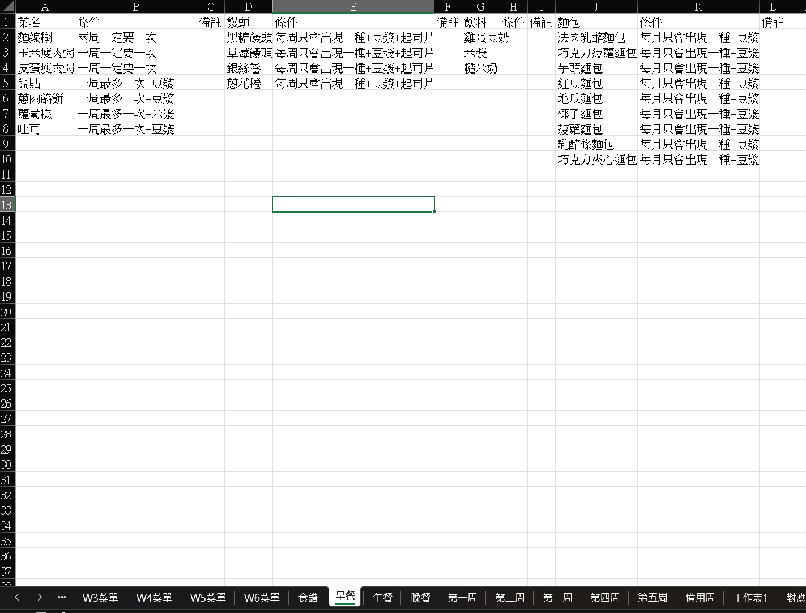
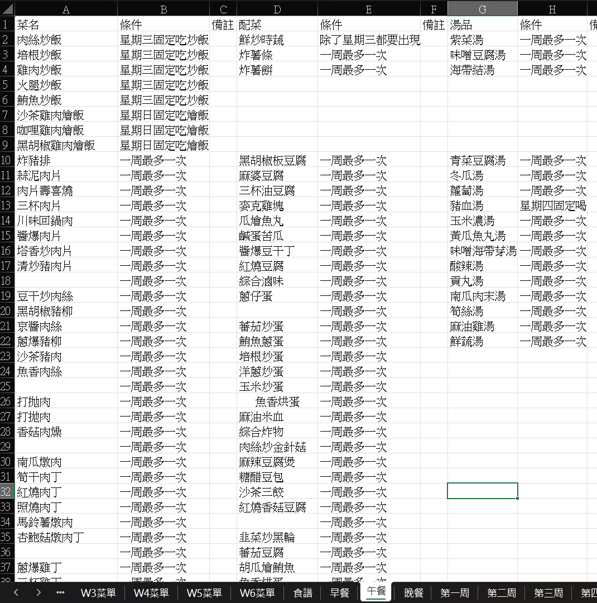
避免主要食材重複： 系統會由食譜辨識主菜的主要食材， 產生晚餐時避開與當天午餐相同的主要食材， 減少同一天午、晚餐內容過於相近的情況。
03
MENU GENERATION
依條件產生下個月菜單
系統依三餐規則產生每週菜單。 一般情況下會產生 W2～W6， W1 則通常承接上個月最後一週的菜單。 若 W1 的起始日剛好是當月 1 日， 系統會另外詢問是否一併重新生成 W1。
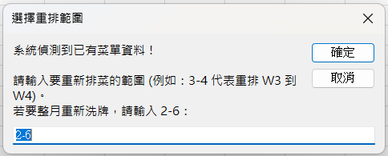
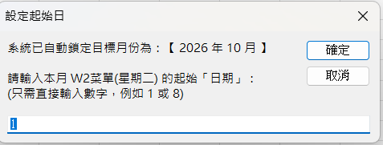
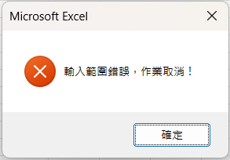
W1 不直接從範圍欄位輸入
一般重新排程範圍以 W2～W6 為主， 因此直接輸入 1-6 會顯示錯誤提示。 若 W1 符合重新生成條件， 系統會另外詢問是否一併產生， 避免誤將原本承接上月的 W1 覆蓋。
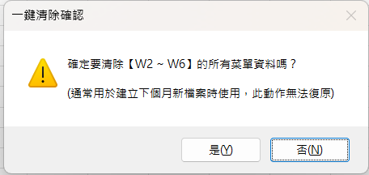
建立新月份時可先清除既有菜單
若要建立下一個月的新菜單， 可先清除 W2～W6 的既有內容。 因此程式會在執行前再次確認， 並提示資料清除後無法復原， 避免誤操作覆蓋原有菜單。
一週菜單畫面
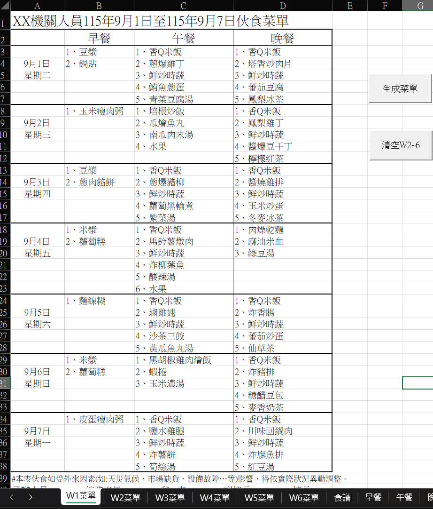
DESIGN DECISION
為什麼固定產生下個月？
原版本可以自由輸入年月並產生指定月份。 實際確認作業方式後， 菜單通常是在當月預先製作下個月內容， 完成後還會進行簽核， 因此很少重新大幅調整。
與使用者討論彈性與操作便利性的差異後， 改成直接鎖定下個月， 減少不必要的日期輸入步驟。
04
RECIPE DATA
菜名背後要知道用了什麼
為了讓自動生成的菜單可以繼續往後處理， 另外建立食譜資料。 每一道菜可以設定多項食材、數量與備註， 並預留最多 10 組食材欄位。
備註原本不在最初需求中。 製作時發現部分菜色有特定烹調與分配方式， 因此提出是否一起帶入後續廚師表， 經確認後加入此功能。
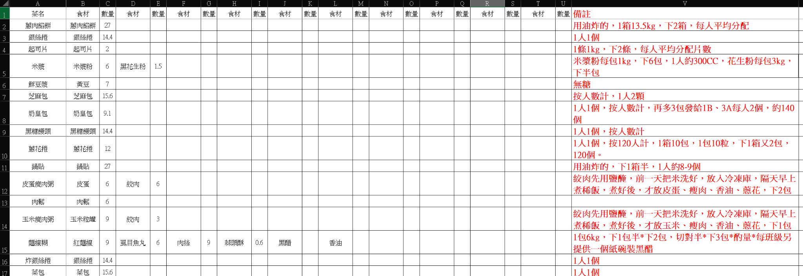
05
MENU → RECIPE → CHEF SHEET
一個菜名，自動展開成實際食材
整月廚師表依菜單找到對應食譜， 將菜名展開為實際食材、數量、單位與備註， 再依日期與早餐、午餐、晚餐排列。
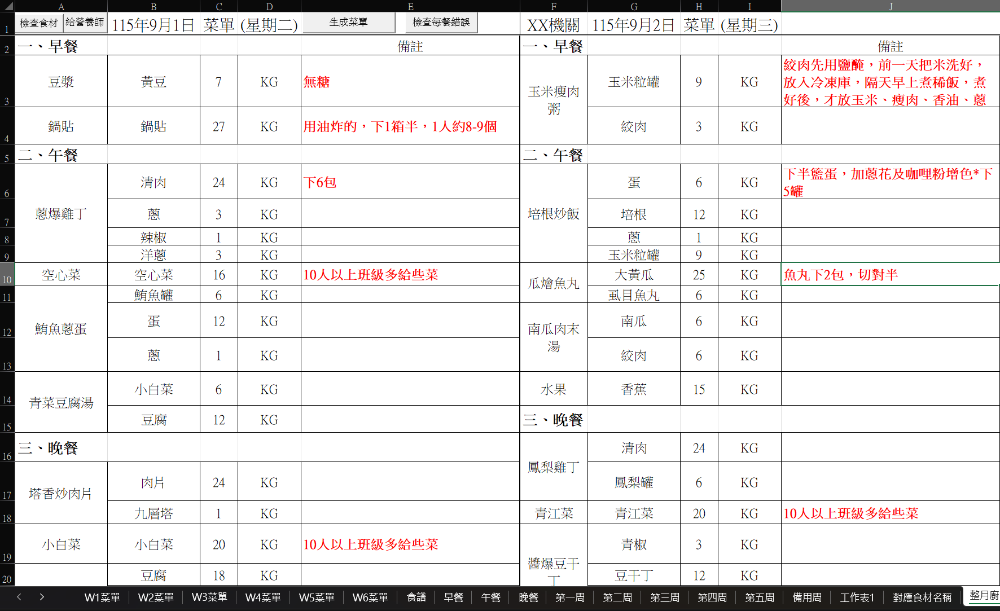
MEAL CHECK
產生後，再檢查每餐資料
廚師表可以檢查早餐、午餐與晚餐是否仍有無法對應的食材。 若資料完整，就會顯示正常； 若有食材失去對應，則以紅字提示需要處理的餐別。
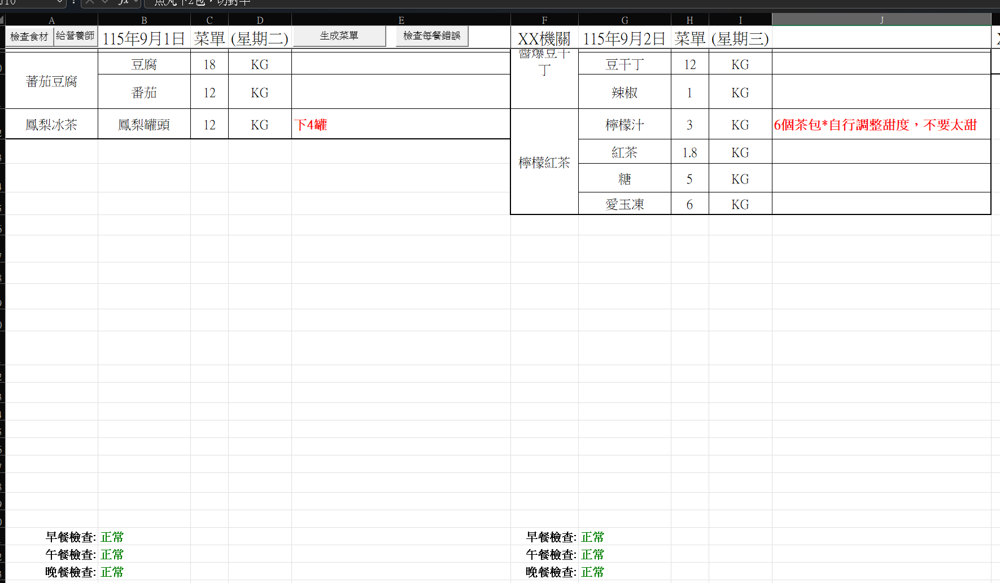
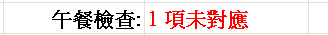
FOOD SOURCE VALIDATION
不只報錯，也告訴使用者要去哪裡修
系統會交叉檢查食譜、各種類食材表與 「對應食材名稱」之間的關係。
錯誤 1 代表對應名稱已存在， 但標準食材在各種類主檔中找不到； 錯誤 2 則代表食譜使用了食材， 卻沒有建立對應食材名稱。
提示內容會列出異常食材與修正方式， 完成修正後重新檢查，即可確認資料來源是否完整。
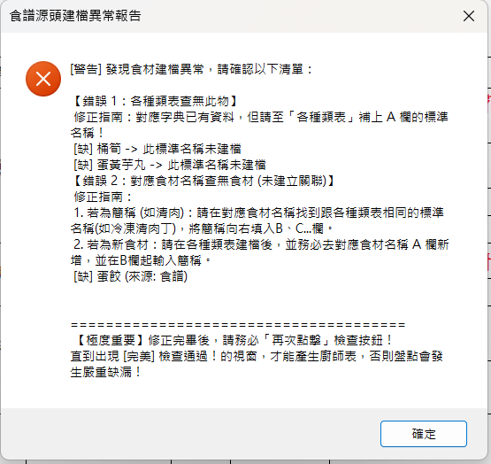
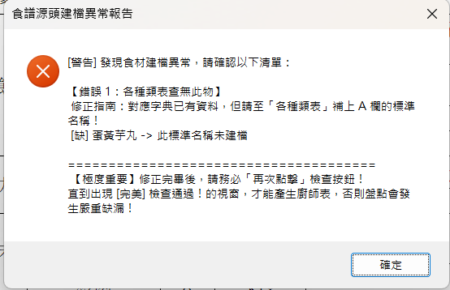
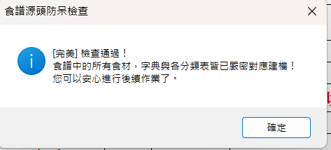
06
WEEKLY PLANNING
從「要煮什麼」變成「要準備多少」
周表會列出完整食材清單， 彙整上期結存、每日下鍋量、每日進貨與本期結存。 下鍋資料可由廚師表直接更新， 也可以依實際使用量與食材規格模擬預計進貨數量。
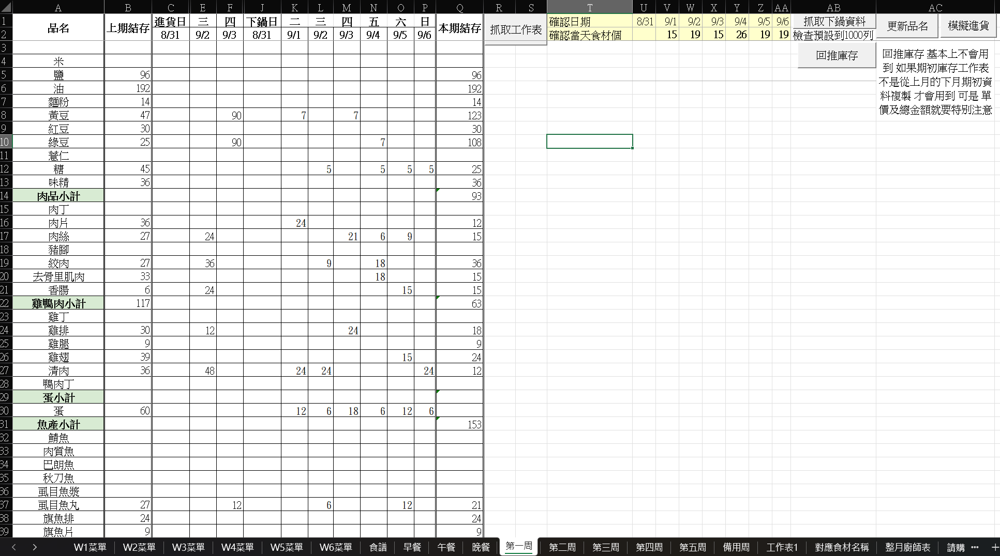
07
PURCHASE DATA
實際進貨資料集中在工作表1
各種類食材主檔更新後， 工作表1可重新整理品名、單位與定價資料。 周表模擬出的進貨量也可以直接抓入， 再由使用者依實際進貨狀況調整。
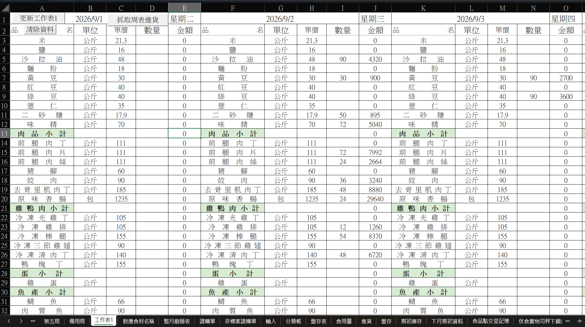
DATA CHECK
有進貨，卻少了價格？
蔬菜、水果、蛋等時價品項， 需在實際進貨後補入當日價格。 若已有進貨數量卻缺少必要的單價或金額， 系統會統計異常筆數提醒使用者。
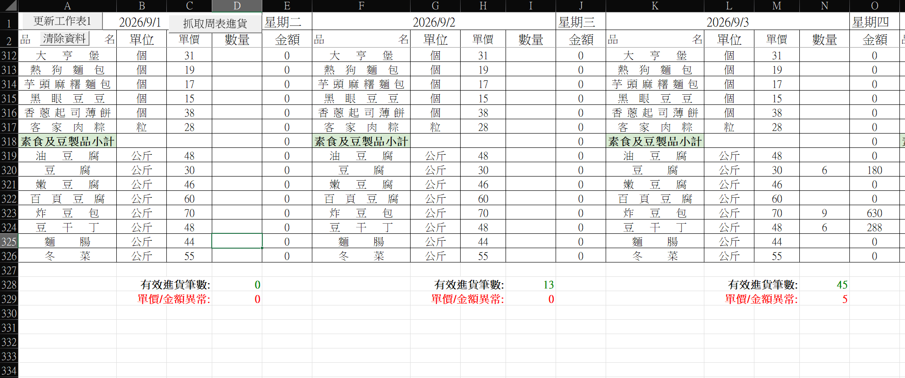
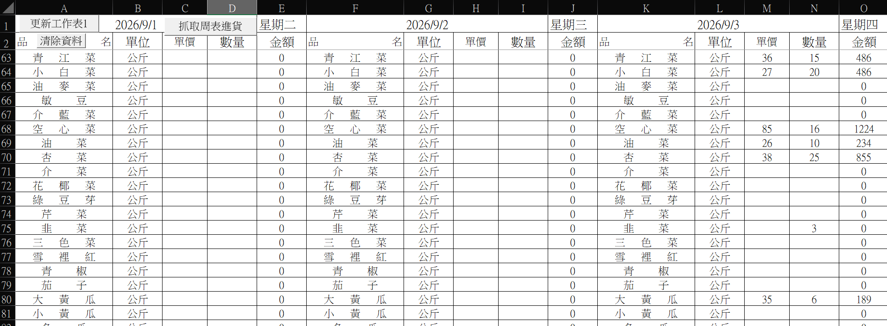
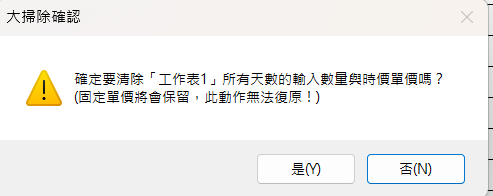
08
DOCUMENT GENERATION
進貨資料，再轉成正式作業表單
工作表1資料確認後， 可依原有作業格式產生請購與查驗資料， 不需要再次輸入相同的品項、數量與價格。
請購單
使用者輸入預計請購的日期， 系統便依該日工作表1資料產生對應請購內容。 不同品項類型仍可沿用原本所需的正式格式。
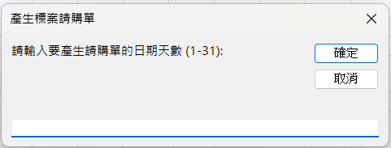
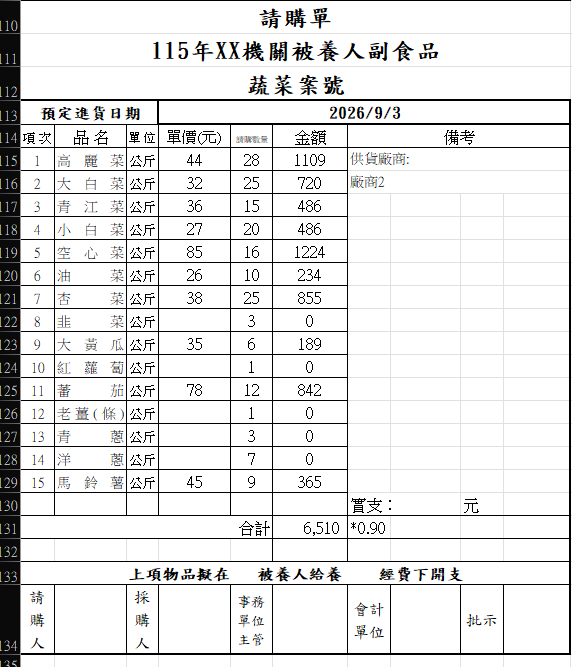
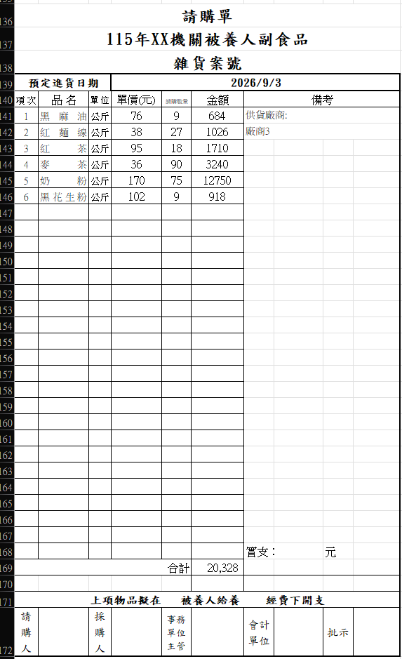
查驗單
查驗資料分為指定品項與食材種類， 也可以直接產生當月所有需要的查驗內容。 只要當月有進貨紀錄，即可依來源資料整理輸出。
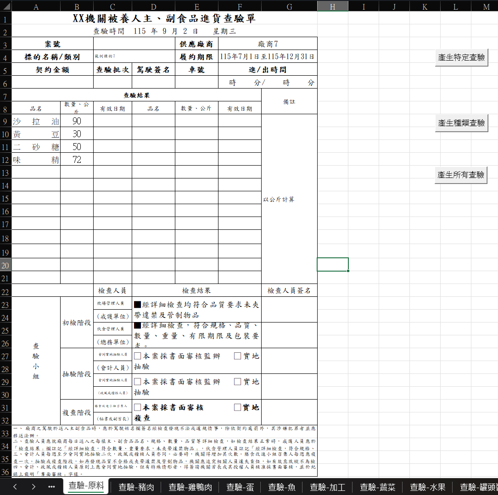
09
MONTHLY DATA
使用量與進貨量分開彙整
食用量由周表整理， 進貨資料則由工作表1整理。 兩者使用相近的月份結構， 再作為盤存、分類帳與日報等後續流程的資料來源。
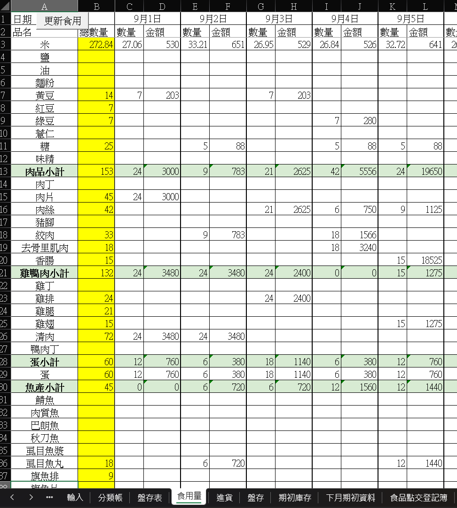
食用金額與 FIFO： 所有食材皆依進貨批次與先進先出順序計算使用金額。 若同一食材不同批次的價格不同， 系統會依實際使用到的批次帶入對應單價； 蔬菜、水果、蛋等價格變動較頻繁的品項，尤其能減少人工查價與換算。
10
INVENTORY & FIFO
月底不會歸零，而是接到下一個月
盤存依期初庫存、本月進貨與食用量計算， 所有食材皆依先進先出邏輯逐批扣除。 若同一食材有多筆進貨紀錄， 會優先使用較早的批次； 尚未使用完的批次則繼續保留。
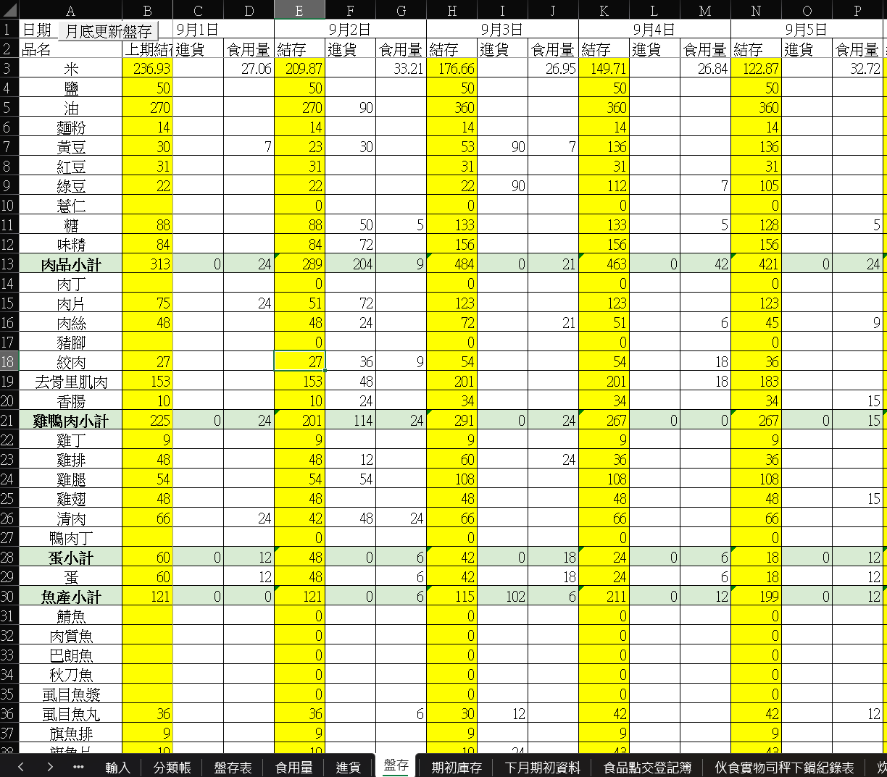
FIFO 批次處理： 同一食材若有多筆進貨紀錄， 系統會依進貨順序逐批扣除。 月底仍未使用完的批次， 會保留原有數量與價格， 作為下個月期初資料的一部分。
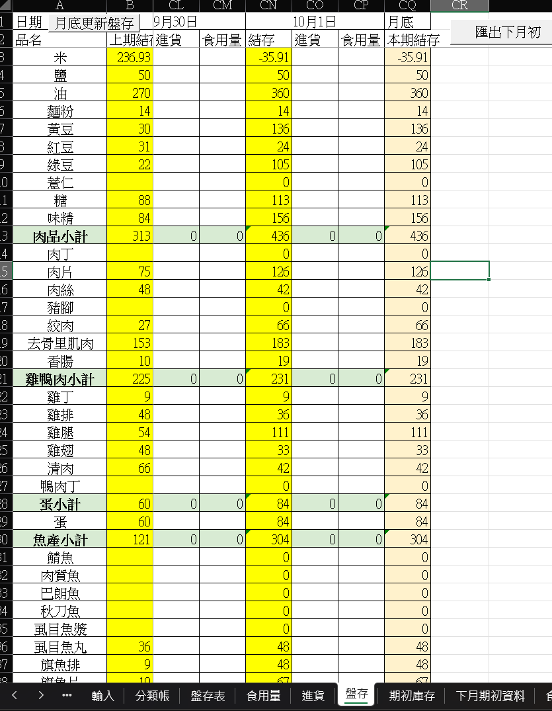
畫面說明： 此截圖為功能測試用示意資料， 部分前期庫存與進貨資料未完整建立， 因此可能出現負數。 正式作業中， 負數代表盤存資料異常； 月底更新盤存後， 使用者需先人工檢查並修正， 確認無異常後， 再匯出下月期初資料。 由於月底盤存是整月資料的最後確認階段， 因此刻意保留人工複核， 不讓流程在未確認的情況下直接跨月。
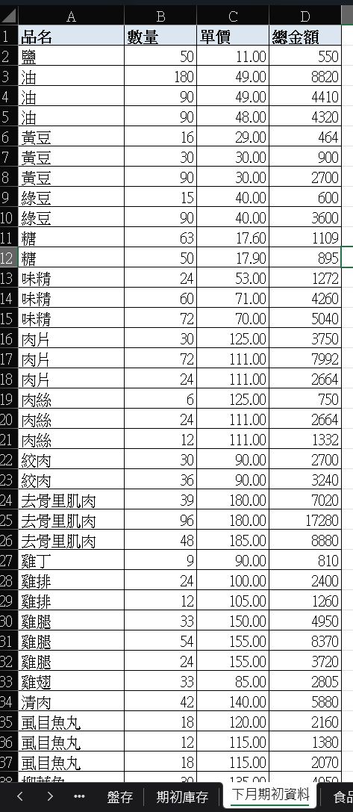
為什麼不是只留下庫存總數？
標案與價格可能隨期間變動。 如果月底只保留食材的總數量， 就無法判斷剩餘庫存來自哪一批進貨， 以及應該沿用哪一個價格。
因此只要某筆進貨尚未完全使用， 就會保留為獨立批次並匯出到下月期初， 讓跨月盤存可以延續原本的價格與先進先出順序。
11
DAILY REPORT
前面的資料，最後變成正式報表
每月預先保留 1～31 日工作表， 每日可更新四種既有報表： 每日實發伙食實物報告表、 配發伙食實物計算單、 收入傳票及支出傳票。
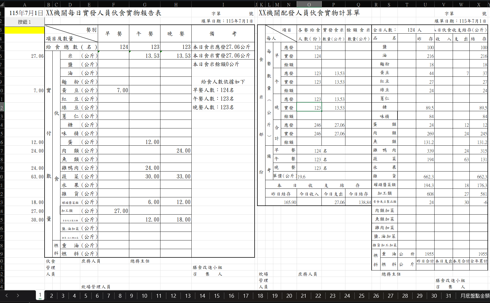
VOUCHERS
收入與支出傳票
同一天的進貨、使用與相關金額資料， 也會整理成原有的收入及支出傳票格式。
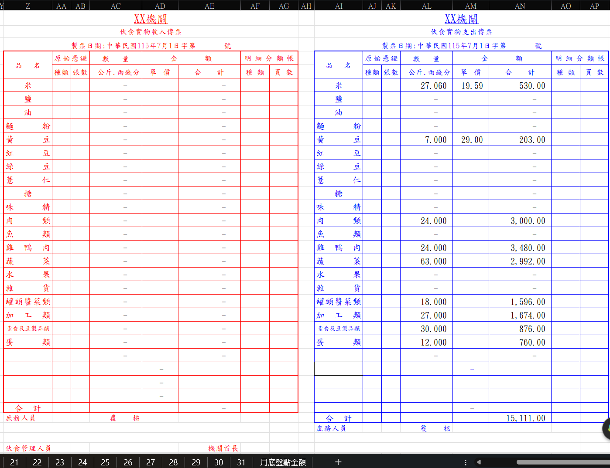
MONTH-END SUMMARY
月底盤點金額
將 1～31 日的收入與支出資料統整成整月一覽， 方便在月底集中確認當月收支與盤點金額， 不需要再逐日查看各日期的傳票資料。
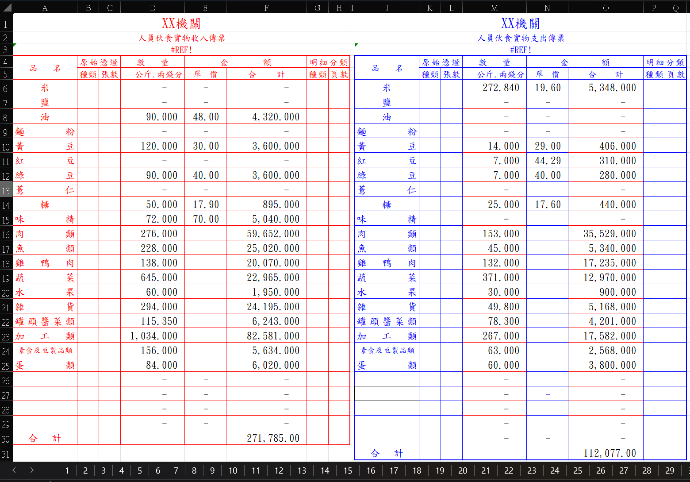
12
RESULT
從減少輸入，到重新整理整條流程
Excel 公式
舊使用者回饋， 公式版本已至少減少約三分之一的整體作業時間。
仍有維護成本
另一位較熟悉 Excel 的使用者， 使用公式版本處理整月作業仍表示至少約需 20 小時。
主要更新流程
在前置資料已確認正確的情況下， 現行主要更新流程可在約 20 分鐘內完成。
DEVELOPMENT
開發方式
專案中的需求理解、資料結構、流程設計、 功能測試與實際使用調整由我負責。 VBA 程式撰寫、技術查詢與除錯過程會搭配 AI 協助。